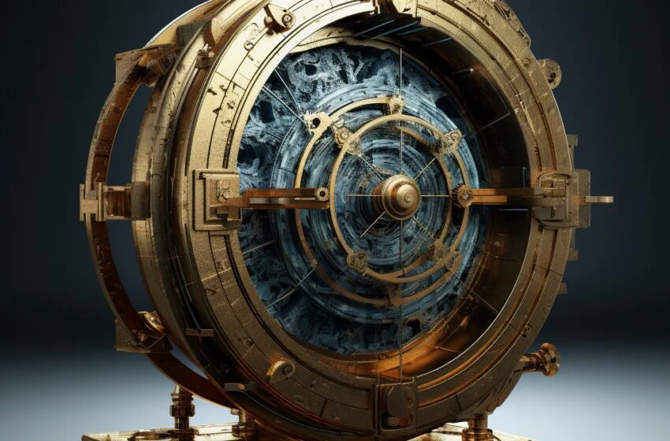

Photo Gallery:
Designs for the Analytical Engine:
 The Analytical engine is considered the first attempt to build a general-purpose computer...
The Analytical engine is considered the first attempt to build a general-purpose computer...
Photo of the Analytical Engine:
 Seen above, a photo of part of the analytical engine, though the full design never came to fruition.
Seen above, a photo of part of the analytical engine, though the full design never came to fruition.
Later inventions like ENIAC:
 ENIAC was finally built in 1945 and was capable of solving many numerical probems.
ENIAC was finally built in 1945 and was capable of solving many numerical probems.
Antikythera Mechanism:
 Rendition of the famous Antikythera Mechanism